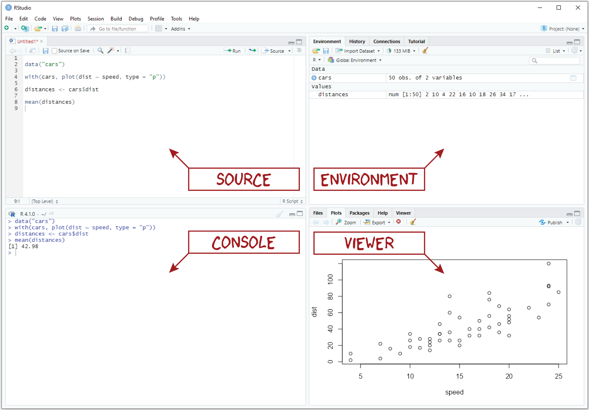
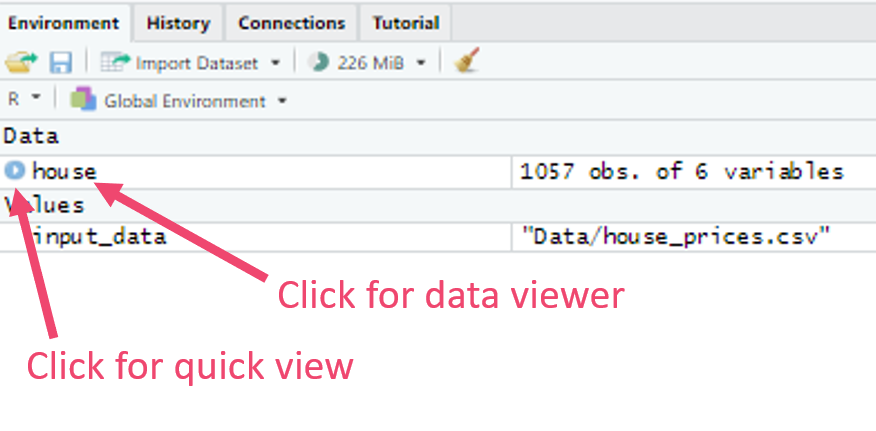
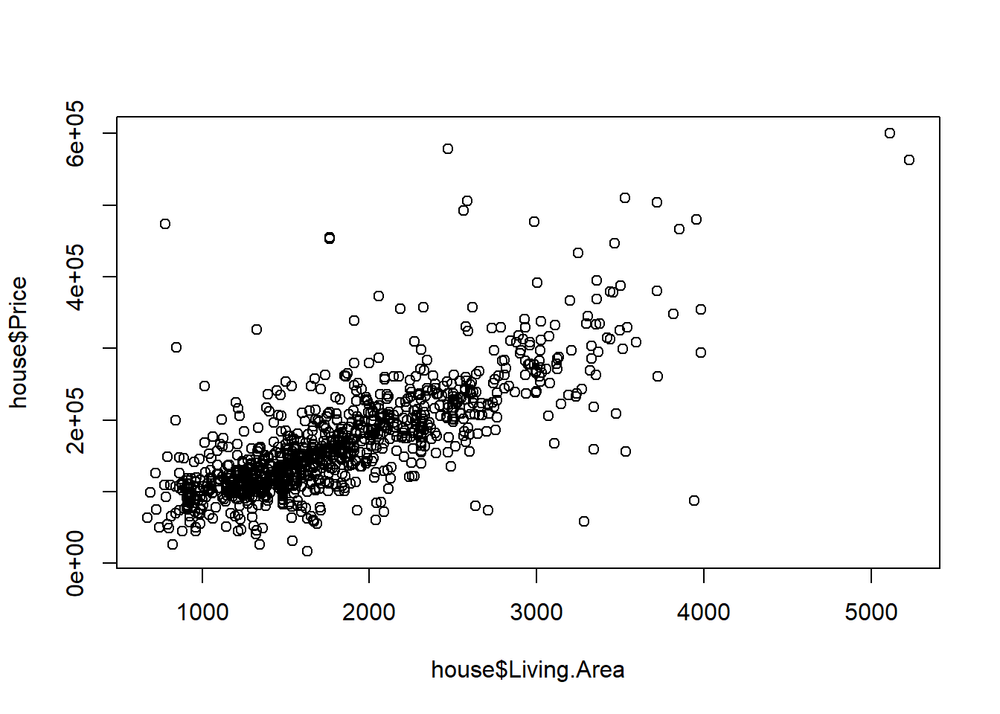
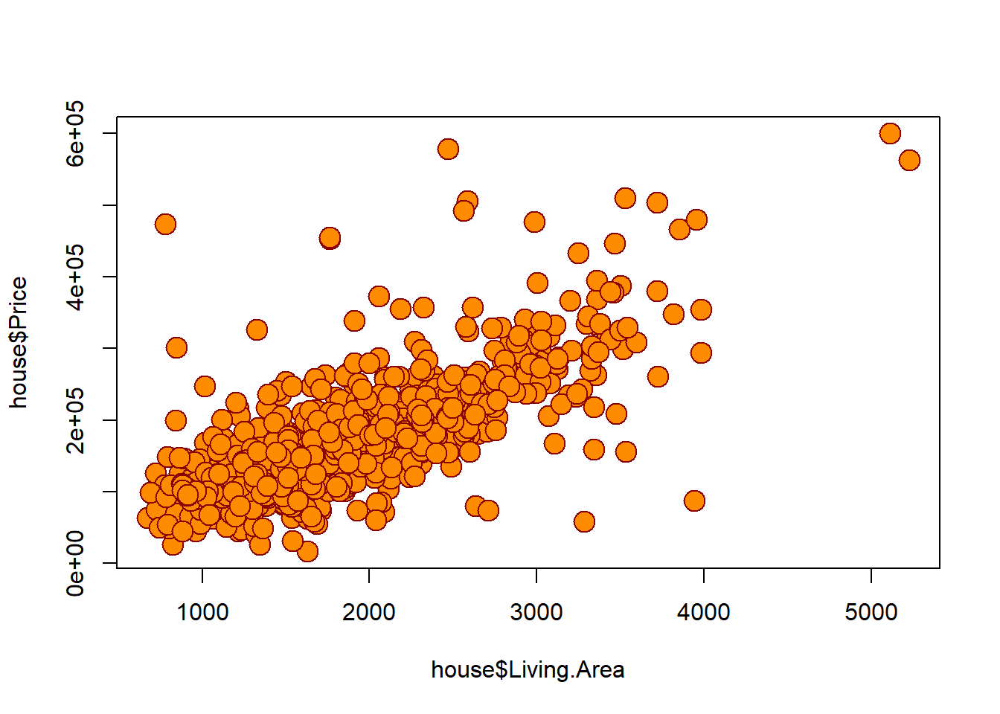

rep("Boba Fett", 5)Lab 3: Introduction to R
Outline
Objectives
In this lab, you will learn
- how to use RStudio
- how to make a plot with R
- how to do math in R, create objects, use functions, etc.,
- ins and outs of a typical workflow in R
R Packages
No additional packages required this week.
Data
- house prices
- county elections
Grade
For this assignment, the only thing you will turn in on Canvas is a brief write up detailed at the end of the assignment. You will use R to create some statistics based on a new dataset.
Working in RStudio

If you are going to do anything with R, RStudio is hands-down the best place to do it. RStudio is an open-source integrated development environment (or IDE) that makes programming in R simpler, more efficient, and most importantly, more reproducible. Some of its more user-friendly features are syntax highlighting (it displays code in different colors depending on what it is or does, which makes it easier for you to navigate the code that you’ve written), code completion (it will try to guess what code you are attempting to write and write it for you), and keyboard shortcuts for the more repetitive tasks.
Pane layout
When you first open RStudio, you should see three window panes: the Console, the Environment, and the Viewer. If you open an R script, a fourth Source pane will also open. The default layout of these panes is shown in the figure above.
- Source. The Source pane provides basic text editing functionality, allowing you to create and edit R scripts. Importantly, you cannot execute the code in these scripts directly, but you can save the scripts that you write as simple text files. A dead give away that you have an R script living on your computer is the .R extension, for example, my_script.R.
- Console. The Console pane, as its name suggests, provides an interface to the R console, which is where your code actually gets run. While you can type R code directly into the console, you can’t save the R code you write there into an R script like you can with the Source editor. That means you should reserve the console for non-essential tasks, meaning tasks that are not required to replicate your results.
- Environment. The Environment pane is sort of like a census of your digital zoo, providing a list of its denizens, i.e., the objects that you have created during your session. This pane also has the History tab, which shows the R code you have sent to the console in the order that you sent it.
- Viewer. The Viewer pane is a bit of a catch-all, including a Files tab, a Plots tab, a Help tab, and a Viewer tab.
- The Files tab works like a file explorer. You can use it to navigate through folders and directories. By default, it is set to your working directory.
- The Plots tab displays any figures you make with R.
- The Help tab is where you can go to find helpful R documentation, including function pages and vignettes.
Let’s try out a few bits of code just to give you a sense of the difference between Source and Console.
As you work through this lab, you can practice running code in the Console, but make sure to do the actual exercises in an R script.
Exercises
- First, let’s open a new R script. To open an R script in RStudio, just click File > New File > R Script (or hit
Ctrl + Shift + N,Cmd + Shift + Non Mac OS). - Copy this code into the console and hit Enter.
- Now, copy that code into the R script you just opened and hit Enter again. As you see, the code does not run. Instead, the cursor moves down to the next line. To actually run the code, put the cursor back on the line with the code, and hit
Ctrl + Enter(CMD + Enteron Mac OS).
Load in some data
We will load in the data “house_prices.csv”, which is posted on Canvas. Save the data into a folder, preferably the same folder as where you are saving your R-script.
Set the working directory
You need to tell R what file folder you will be working out of. You can do this in two ways: 1. Go to the “Files” tab in the Viewer pane. Navigate to your folder, then hit the “More” icon, then select “Set As Working Directory”. Since you will want anybody who runs your code to set their working directory, copy the code from the console into your
2. Type the following code, but instead of your_file_path type the actual folder. Make sure your slashes are forward slashes ( / ) and not back slashes ( \ ).
For example, in my script I will type the following, since that’s the folder I’m keeping my data in.
Load in the data
Now that R knows where we have the data stored, we can load the data in.
Note that I have my data in a subfolder of my working directory called “Data”. Your code may look more like this:
This tells R to read in the csv and call the data frame “house”. You should see the data pop up in your environment. You can click on the word “house” and it will open up the data in the data viewer for you to explore. Or, if you just want a quick look, you can hit the little blue circle with the arrow next to the word “house”.

We can also ask R to print the first few lines of a dataframe to show us what it looks like. In this case, each row represents a house.
Price Living.Area Bathrooms Age Fireplace Bedrooms
1 142212 1982 1 133 0 3
2 134865 1676 2 14 1 3
3 118007 1694 2 15 1 3
4 138297 1800 1 49 1 2
5 129470 2088 1 29 1 3The Price is how much the house sold for. The Living.Area is the number of square feet the house had. We also have the number of Bathrooms and Bedrooms. Finally, we have the Age of the house and whether it has a Fireplace.
Create some descriptive statistics
R can work as a calculator. Let’s try a few simple exercises. What is the mean and standard deviation of house price? Note that we have to tell R what data frame we’re getting the variable from (in this case “house”), then put a $ to let R know we’re retrieving an element of the data frame (in this case “Price”).
[1] 167901.9[1] 77158.35Make Your First Plot!
To ease you into working with R, let’s visualize some data to answer a simple question: Is the price of a house related to its square footage? Don’t worry about understanding all of this! It’s just to give you a feel for the sort of graphics you can make with R. We’ll spend a future lab learning how to make even better graphics.
The plot() function
The base R graphics package provides a generic function for plotting, which - as you might have guessed - is called plot(). (“Base R” means it’s automatically loaded and you don’t have to install it.) To see how it works, try running this code:

Customizing your plot
With the plot() function, you can do a lot of customization to the resulting graphic. For instance, you can modify all of the following:
pchwill change the point type,mainwill change the main plot title,xlabandylabwill change the x and y axis labels,cexwill change the size of shapes within the plot region,pchwill change the type of point used (you can use triangles, squares, or diamonds, among others),colchanges the color of the point (or its border), andbgchanges the color of the point fill (depending on the type of point it is)
For instance, try running this code:

Exercises
- Complete the following line of code to preview only the first three rows of the
housetable.
- Modify the code below to change the size (
cex) of the points from 2 to 1.5.
What does this plot tell us about the relationship between house size and price? Is it positive or negative? Or is there no relationship at all? If there is a relationship, what might explain it?
Complete the code below to add “Scatter Plot of House Size and Price” as the
maintitle.
- Complete the code below to add “House size (sq. ft.)” as the x-axis label and “Price ($)” as the y-axis label.
R Basics
R is a calculator
You can just do math with it:
[1] 24[1] 51[1] -0.9613975Objects and Functions
But, R is more than just a calculator. There are a lot of things you can make with R, and a lot of things you can do with it. The things that you make are called objects, and the things that you do with objects are called functions. Any complex statistical operation you want to conduct in R will almost certainly involve the use of one or more functions.
Calling functions
To use a function, we call it like this:
Try calling the seq() function.
[1] 1 2 3 4 5As you can see, this generates a sequence of numbers starting at 1 and ending at 5. There are two things to note about this. First, we do not have to specify the arguments explicitly, but they must be in the correct order:
[1] 1 2 3 4 5[1] 5 4 3 2 1Second, the seq() function has additional arguments you can specify, like by and length. While we do not have to specify these because they have default values, you can change one or the other (but not at the same time!):
[1] 1 3 5 7 9[1] 1.0 5.5 10.0Creating objects
To make an object in R, you use the arrow, <-, like so:
Try creating an object with value 5.137 and assigning it to the name bob, like this:
There are three things to note here. First, names in R must start with a letter and can only contain letters, numbers, underscores, and periods.
Second, when you create an object with <-, it ends up in your workspace or environment (you can see it in the RStudio environment pane). Finally, it is worth noting that the advantage of creating objects is that we can take the output of one function and pass it to another.
[1] 1 3 5Exercises
Use
seq()to generate a sequence of numbers from 3 to 12.Use
seq()to generate a sequence of numbers from 3 to 12 with length 25.Why doesn’t this code work?
Use
<-to create an object with value 25 and assign it to a name of your choice.Now try to create another object with a different value and name.
What is wrong with this code?
Assignment
Now it’s time to work on your own. Download the “County_Election.csv” data set from Canvas and put it in your working directory. Read in the data using read.csv(). Then, write a paragraph giving some information on the data that you find interesting. Include at least 3 statistics and one graph. Be sure to interpret what you think the significance of the statistic is.
Here is a table describing the variables in the data set:
| Name | Description |
|---|---|
| state | State FIPS Code |
| county | County FIPS Code |
| county_name | County Name |
| state_name | State Name |
| fips | Combined FIPS Code |
| pct_republican_2016 | Percent of voters in county that voted Republican in 2016 presidential election |
| frac_coll_plus2010 | Percent of adults 25 years or older who have a 4-year college degree or more in 2010 |
| foreign_share2010 | Number of foreign born residents in the 2010 Census divided by the sum of native and foreign born residents. |
| med_hhinc2016 | Median household income in 2016 |
| poor_share2010 | Share of families with incomes under the poverty line in 2010 |
| share_black2010 | Share of people who are Black in 2010 |
| share_hisp2010 | Share of people who are Hispanic in 2010 |
| share_asian2010 | Share of people who are Asian in 2010 |
| rent_twobed2015 | The median gross rent for renter-occupied housing units with two |
| popdensity2010 | Number of residents per square mile in 2010 |
| ann_avg_job_growth_2004_2013 | Average annualized job growth rate over the time period 2004 to 2013 |
You may want to do different statistics from what we did above. Here are some functions you can use. To get information about them, type a question mark followed by the function you are looking up into the console. Alternatively, look the function up online.
Statistics
| Statistic | Function |
|---|---|
| Minimum: | min() |
| Maximum: | max() |
| Average: | mean() |
| Standard Deviation: | sd() |
| Median: | median() |
| Percentiles: | quantile() |
| Correlation Coefficient: | cor() |
| Frequency tables: | table() |
| Relative Frequency tables: | prop.table() |
Note that in frequency tables you can use more than one variable!
Graphics
| Plot | Function |
|---|---|
| Bar chart: | barplot() |
| Histogram: | hist() |
| Box plots: | boxplot() |
| Scatter plot: | plot() |